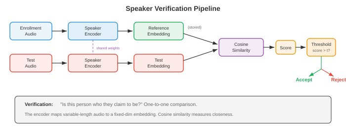
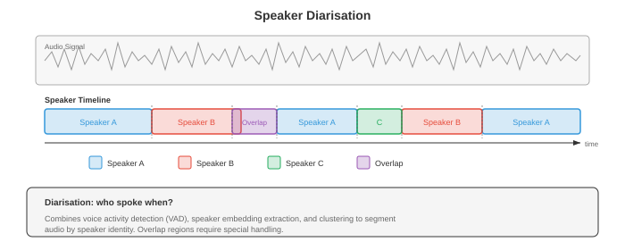
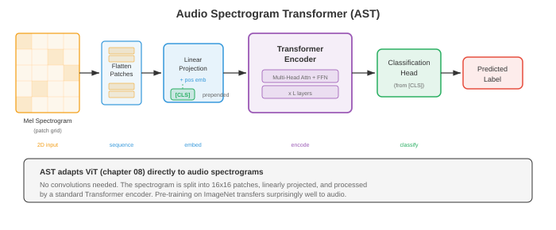

Speaker and Audio Analysis¶
Speaker and audio analysis identifies who is speaking, when they speak, and what non-speech sounds are present. This file covers speaker verification and identification, i-vectors, d-vectors, x-vectors, speaker diarisation, audio event classification, music information retrieval, and emotion recognition from speech.
-
In file 01 we built the signal-processing foundations: spectrograms, MFCCs, and mel filterbanks. In file 02 we recognised what was said. Now we ask who said it, when they said it, and what else is happening in the audio. Speaker recognition, diarisation, audio classification, and music analysis all share a common thread: learning compact embeddings that capture the right invariances for the task at hand, echoing the embedding ideas from chapter 06.
-
Think of identifying a speaker like recognising a friend's voice on the phone. You do not need to understand the words; something about the timbre, pacing, and vocal quality is unique to that person. Speaker recognition systems learn to extract exactly this "voiceprint" from raw audio, ignoring what is said and focusing on how it is said.
-
Speaker recognition is the umbrella term for two related tasks:
- Speaker verification (SV): given a claimed identity and an audio clip, determine whether the speaker is who they claim to be. This is a binary decision (accept or reject) and is the technology behind voice-based authentication ("Hey Siri, is this my voice?").
- Speaker identification (SI): given an audio clip and a gallery of known speakers, determine which speaker produced the clip. This is a multi-class classification problem.

-
Both tasks share the same underlying representation: a fixed-dimensional speaker embedding that captures the speaker's identity regardless of what they say. The difference is only in the decision stage: verification compares two embeddings, identification finds the nearest embedding among candidates.
-
Cosine similarity is the standard metric for comparing speaker embeddings. Given enrollment embedding \(e\) and test embedding \(t\):
-
A threshold \(\theta\) determines the accept/reject decision: if \(s > \theta\), accept. The threshold trades off between the false acceptance rate (FAR) and false rejection rate (FRR). The equal error rate (EER), where FAR = FRR, is the standard evaluation metric. Lower EER means better performance. State-of-the-art systems achieve EER below 1% on standard benchmarks (VoxCeleb).
-
i-vectors (Dehak et al., 2010) were the dominant speaker embedding before deep learning. The idea comes from factor analysis (chapter 02's matrix factorisation and chapter 04's dimensionality reduction). A universal background model (UBM), a large GMM trained on diverse speakers, defines a supervector space. Each utterance's GMM supervector is projected into a low-dimensional total variability space:
-
where \(M\) is the utterance's GMM supervector, \(m\) is the UBM mean supervector, \(T\) is the total variability matrix (learned from data), and \(w\) is the i-vector, a low-dimensional (typically 400-600) representation capturing both speaker and channel variability.
-
To remove channel variability from i-vectors, Probabilistic Linear Discriminant Analysis (PLDA) models the i-vector as a sum of speaker-specific and channel-specific latent variables. PLDA provides a principled log-likelihood ratio score for verification:
-
d-vectors (Variani et al., 2014) were the first neural speaker embeddings. A DNN trained for speaker classification on frame-level features extracts a fixed-dimensional representation by averaging the last hidden layer activations over all frames in an utterance. Simple but effective, d-vectors demonstrated that neural networks could learn speaker-discriminative features without the complex statistical machinery of i-vectors.
-
x-vectors (Snyder et al., 2018) significantly advanced neural speaker embeddings using a Time Delay Neural Network (TDNN) architecture. TDNNs are 1D convolutions with specific context windows at each layer, related to the dilated convolutions from file 03's WaveNet but applied to frame-level features rather than raw waveform samples.

- The x-vector architecture has three stages:
- Frame-level layers: a stack of TDNN layers processes MFCCs (from file 01) with progressively wider temporal context. Each layer sees a fixed context window (e.g., \(\{t-2, t-1, t, t+1, t+2\}\) for the first layer, wider for subsequent layers).
- Statistics pooling: after the frame-level layers, the mean and standard deviation of the frame-level outputs are computed over the entire utterance, producing a fixed-dimensional vector regardless of utterance length:
-
where \(h_t\) is the frame-level output at time \(t\). The concatenation \([\mu; \sigma]\) is the pooled representation.
- Segment-level layers: fully connected layers process the pooled representation. The output of the first segment-level layer (before the softmax) is the x-vector embedding.
-
x-vectors are trained with a standard cross-entropy loss over speaker identities. Despite being trained for classification, the learned intermediate representation (the x-vector) generalises well to unseen speakers because the network learns to extract speaker-discriminative features rather than memorising specific speakers.
-
ECAPA-TDNN (Desplanques et al., 2020) is the current state-of-the-art TDNN-based architecture for speaker recognition. It introduces three improvements over x-vectors:
- Squeeze-Excitation (SE) blocks: channel attention (from chapter 08's SENet) that re-weights feature channels based on global context, allowing the model to emphasise speaker-relevant channels.
- Res2Net-style multi-scale features: within each TDNN block, the channels are split into groups that are processed hierarchically, creating features at multiple temporal resolutions (analogous to chapter 08's multi-scale feature extraction).
- Attentive statistics pooling: instead of equal-weight averaging, an attention mechanism weights each frame's contribution to the pooled statistics. Frames with more speaker-discriminative content (e.g., vowels, which carry more speaker information) receive higher attention weights:
-
where \(f\) is a small neural network and \(v\) is a learned attention vector. The attended mean and standard deviation become \(\tilde{\mu} = \sum_t \alpha_t h_t\) and \(\tilde{\sigma} = \sqrt{\sum_t \alpha_t (h_t - \tilde{\mu})^2}\).
-
ECAPA-TDNN is typically trained with AAM-Softmax (Additive Angular Margin Softmax), which adds an angular margin penalty to the classification loss, pushing embeddings of the same speaker closer together and different speakers further apart on the hypersphere:
-
where \(\theta_{y_i}\) is the angle between the embedding and the weight vector of the true class, \(m\) is the margin (typically 0.2), and \(s\) is a scaling factor (typically 30). This loss comes from face recognition (chapter 08's ArcFace) and is highly effective for speaker verification.
-
Speaker diarisation answers "who spoke when" in a multi-speaker recording. Think of it as colouring a timeline: each colour represents a different speaker, and the system must determine when each speaker is active, including overlapping speech.

-
Clustering-based diarisation is the traditional pipeline approach:
- Segmentation: divide the audio into short segments (typically 1-2 seconds) using a sliding window or speaker change detection.
- Embedding extraction: extract a speaker embedding (x-vector, ECAPA-TDNN) for each segment.
- Clustering: group segments by speaker. Agglomerative Hierarchical Clustering (AHC) is standard: start with each segment as its own cluster, then iteratively merge the two most similar clusters until a stopping criterion is met (based on a distance threshold or a target number of speakers).
- Re-segmentation: refine boundaries using a Viterbi-based re-alignment.
-
The number of speakers is typically unknown a priori, which makes this problem harder than standard clustering. Spectral clustering with an eigenvalue-based threshold for determining \(k\) is another common approach.
-
End-to-end neural diarisation (EEND) (Fujita et al., 2019) frames diarisation as a multi-label classification problem. A neural network (typically a self-attention-based model, chapter 07's transformer) takes the entire recording as input and outputs a binary activity label for each speaker at each frame. This directly handles overlapping speech, which is a major weakness of clustering-based methods.
-
The EEND output for \(S\) speakers at frame \(t\) is:
-
where \(h_t\) is the transformer output at frame \(t\) and \(f_s\) is a linear projection for speaker \(s\). The training loss is binary cross-entropy summed over speakers and frames. A key challenge is that the number of speakers must be fixed or handled with a variable-output architecture (EEND-EDA uses an encoder-decoder with attractors).
-
Permutation invariant training (PIT) for diarisation handles the label ambiguity problem: since speakers have no inherent ordering, the loss is computed for all possible speaker-to-output assignments and the minimum is taken (this is the same PIT used in source separation, covered in file 05).
-
Audio classification assigns a label to an entire audio clip. Unlike ASR (file 02), which transcribes speech, audio classification covers a broader range: environmental sounds (siren, rain, dog bark), music genres (rock, jazz, classical), and general audio events.
-
The standard approach follows the image classification paradigm from chapter 08: represent the audio as a spectrogram (a 2D time-frequency image), then apply a CNN or transformer classifier. This spectral-image approach leverages decades of progress in computer vision.
-
Environmental sound classification (ESC) uses datasets like ESC-50 (50 classes, 2000 clips) and UrbanSound8K. Typical architectures are CNNs (chapter 06) applied to log-mel spectrograms. Data augmentation is crucial: time stretching, pitch shifting, adding background noise, and SpecAugment (file 02's masking approach applied to spectrograms) all improve generalisation.
-
Audio event detection (Sound Event Detection, SED) is the temporal analogue of classification: not just what events are present, but when they start and end. AudioSet (Gemmeke et al., 2017) is the large-scale benchmark with 527 event classes and over 2 million 10-second clips from YouTube, each weakly labelled (clip-level labels, not frame-level).
-
Weakly-supervised SED must learn frame-level predictions from clip-level labels. The standard approach uses a CNN that produces frame-level class probabilities, then aggregates them to clip-level predictions via attention pooling:
-
where \(f_{t,c}\) is the frame-level logit for class \(c\) at time \(t\), and \(\alpha_{t,c}\) is an attention weight. The clip-level prediction \(\hat{Y}_c\) is trained against the clip-level label.
-
Acoustic scene classification (ASC) categorises the overall environment: "airport", "park", "metro station", "office". This is a holistic task: the model must capture the general acoustic texture rather than specific events. The DCASE challenge series benchmarks ASC annually, with winning systems typically using ensembles of CNNs on multi-resolution spectrograms.
-
Audio embeddings are general-purpose representations learned from large-scale audio data, analogous to word embeddings (chapter 07) or image features (chapter 08) that transfer to downstream tasks.
-
VGGish (Hershey et al., 2017) adapts the VGG image classification network (chapter 08) to audio. It processes 0.96-second log-mel spectrogram patches through a VGG-like CNN pre-trained on AudioSet, producing a 128-dimensional embedding per patch. VGGish embeddings serve as general-purpose audio features for downstream tasks, similar to how ImageNet-pretrained CNNs provide visual features.
-
PANNs (Pre-trained Audio Neural Networks, Kong et al., 2020) are a family of CNN architectures (CNN6, CNN10, CNN14) trained on the full AudioSet for audio tagging. CNN14, the most widely used, is a 14-layer CNN with \(3 \times 3\) convolutions applied to log-mel spectrograms. PANNs produce 2048-dimensional embeddings that achieve state-of-the-art transfer learning on diverse audio tasks.
-
Audio Spectrogram Transformer (AST) (Gong et al., 2021) applies the Vision Transformer (ViT, chapter 08) architecture directly to audio spectrograms. The spectrogram is split into \(16 \times 16\) patches (just like ViT splits images), each patch is linearly projected to a token embedding, positional embeddings are added, and a standard transformer encoder (chapter 07) processes the sequence. A [CLS] token's output is used for classification.

-
AST benefits from ImageNet pre-training: since spectrograms are 2D images, AST initialises from a ViT pre-trained on ImageNet images, then fine-tunes on audio. This cross-modal transfer is surprisingly effective because both domains share low-level features (edges, textures) and the positional embeddings can be interpolated to handle different spectrogram sizes.
-
HTS-AT (Chen et al., 2022) improves on AST with a hierarchical Swin Transformer architecture (chapter 08's shifted-window attention), reducing computational cost while improving performance through multi-scale feature extraction.
-
BEATs (Chen et al., 2023) uses an audio-specific pre-training strategy: iterative masked prediction with a discrete tokeniser (similar to wav2vec 2.0's approach from file 02 but applied to general audio). The tokeniser is progressively refined, creating increasingly semantically meaningful discrete audio tokens.
-
Speaker diarisation with embeddings combines speaker embeddings with temporal modelling. Modern systems like Pyannote.audio use a three-stage pipeline: (1) a neural segmentation model that detects speaker turns and overlapping speech, (2) an embedding extraction stage (ECAPA-TDNN) applied to each detected segment, and (3) clustering to assign speaker identities across the recording.
-
Music information retrieval (MIR) applies audio analysis to music. The spectral representations from file 01 are particularly useful here because music has rich harmonic structure.
-
Beat tracking detects the rhythmic pulse of music. The standard approach computes an onset strength envelope from the spectrogram (detecting energy increases that signal note onsets), then finds the tempo using autocorrelation or a tempogram, and finally tracks individual beat positions using dynamic programming to find the sequence of beat times that best matches the onset envelope while maintaining a consistent tempo.
-
Chord recognition identifies the harmonic content over time. The input is typically a chromagram (also called a pitch class profile): a 12-dimensional representation that folds all octaves together, showing the energy in each of the 12 pitch classes (C, C#, D, ..., B). A CNN or RNN (chapter 06) classifies each time frame into one of the standard chord labels (C major, A minor, G7, etc.).
-
The chromagram is computed from the STFT (file 01) by mapping each frequency bin to its pitch class:
-
where \(p \in \{0, 1, \ldots, 11\}\) is the pitch class and \(\text{pitch}(k)\) maps frequency bin \(k\) to its MIDI note number.
-
Source separation basics (detailed further in file 05) separate a music recording into individual instruments (vocals, drums, bass, other). This is central to MIR applications like remixing, karaoke, and music transcription. Models like Demucs (file 05) achieve remarkably good separation quality on the standard MUSDB18 benchmark.
-
Music tagging assigns labels to songs (genre, mood, instruments, era). It is essentially audio classification applied to music, using the same CNN-on-spectrogram approach. The Million Song Dataset and MagnaTagATune are standard benchmarks.
-
Audio fingerprinting identifies a specific recording from a short excerpt, even with noise, reverberation, or compression artifacts. The classic system is Shazam, which hashes constellation points (prominent peaks in the spectrogram). Neural approaches learn robust embeddings that are invariant to acoustic degradation while remaining discriminative between different recordings, echoing the invariant feature learning from chapter 06 and chapter 08.
Coding Tasks (use CoLab or notebook)¶
- Task 1: Speaker embedding extraction with statistics pooling. Build a simple x-vector-style model that processes frame-level features through TDNN layers and statistics pooling to produce speaker embeddings.
import jax
import jax.numpy as jnp
import jax.random as jr
import matplotlib.pyplot as plt
# Simulate frame-level MFCC features for multiple speakers
def generate_speaker_data(key, n_speakers=5, utterances_per_speaker=20,
n_frames=100, n_features=40):
"""Generate synthetic speaker data with speaker-dependent patterns."""
keys = jr.split(key, 3)
all_features = []
all_labels = []
# Each speaker has a characteristic spectral pattern
speaker_patterns = jr.normal(keys[0], (n_speakers, n_features)) * 0.5
for spk in range(n_speakers):
for utt in range(utterances_per_speaker):
k = jr.fold_in(keys[1], spk * utterances_per_speaker + utt)
noise = jr.normal(k, (n_frames, n_features)) * 0.3
features = speaker_patterns[spk][None, :] + noise
all_features.append(features)
all_labels.append(spk)
perm = jr.permutation(keys[2], len(all_features))
features = jnp.stack(all_features)[perm]
labels = jnp.array(all_labels)[perm]
return features, labels
key = jr.PRNGKey(42)
features, labels = generate_speaker_data(key)
n_speakers = 5
n_features = 40
# x-vector-style model
def init_xvector(key, n_features=40, hidden=128, embed_dim=64, n_speakers=5):
keys = jr.split(key, 8)
params = {
# TDNN layer 1: context [-2, 2]
'tdnn1_w': jr.normal(keys[0], (5, n_features, hidden)) * jnp.sqrt(2.0 / (5 * n_features)),
'tdnn1_b': jnp.zeros(hidden),
# TDNN layer 2: context [-2, 2]
'tdnn2_w': jr.normal(keys[1], (5, hidden, hidden)) * jnp.sqrt(2.0 / (5 * hidden)),
'tdnn2_b': jnp.zeros(hidden),
# TDNN layer 3: context [-3, 3]
'tdnn3_w': jr.normal(keys[2], (7, hidden, hidden)) * jnp.sqrt(2.0 / (7 * hidden)),
'tdnn3_b': jnp.zeros(hidden),
# Segment-level layers (after pooling: 2*hidden -> embed_dim)
'seg1_w': jr.normal(keys[3], (2 * hidden, embed_dim)) * jnp.sqrt(2.0 / (2 * hidden)),
'seg1_b': jnp.zeros(embed_dim),
# Classification head
'cls_w': jr.normal(keys[4], (embed_dim, n_speakers)) * jnp.sqrt(2.0 / embed_dim),
'cls_b': jnp.zeros(n_speakers),
}
return params
def xvector_forward(params, x, return_embedding=False):
"""x: (batch, frames, features) -> logits or embeddings."""
# TDNN layers (1D convolutions)
h = jax.lax.conv_general_dilated(
x.transpose(0, 2, 1), params['tdnn1_w'].transpose(2, 1, 0),
window_strides=(1,), padding='SAME'
).transpose(0, 2, 1) + params['tdnn1_b']
h = jax.nn.relu(h)
h = jax.lax.conv_general_dilated(
h.transpose(0, 2, 1), params['tdnn2_w'].transpose(2, 1, 0),
window_strides=(1,), padding='SAME'
).transpose(0, 2, 1) + params['tdnn2_b']
h = jax.nn.relu(h)
h = jax.lax.conv_general_dilated(
h.transpose(0, 2, 1), params['tdnn3_w'].transpose(2, 1, 0),
window_strides=(1,), padding='SAME'
).transpose(0, 2, 1) + params['tdnn3_b']
h = jax.nn.relu(h)
# Statistics pooling: mean and std over time
mu = jnp.mean(h, axis=1)
sigma = jnp.std(h, axis=1)
pooled = jnp.concatenate([mu, sigma], axis=-1)
# Segment-level layer -> embedding
embedding = jax.nn.relu(pooled @ params['seg1_w'] + params['seg1_b'])
if return_embedding:
return embedding
# Classification
logits = embedding @ params['cls_w'] + params['cls_b']
return logits
def cross_entropy_loss(params, features, labels):
logits = xvector_forward(params, features)
one_hot = jax.nn.one_hot(labels, n_speakers)
log_probs = jax.nn.log_softmax(logits)
return -jnp.mean(jnp.sum(one_hot * log_probs, axis=-1))
grad_fn = jax.jit(jax.value_and_grad(cross_entropy_loss))
# Train
params = init_xvector(jr.PRNGKey(0))
lr = 1e-3
losses = []
for epoch in range(300):
loss_val, grads = grad_fn(params, features, labels)
params = jax.tree.map(lambda p, g: p - lr * g, params, grads)
losses.append(float(loss_val))
# Extract embeddings and visualise with t-SNE-style 2D projection (using PCA)
embeddings = xvector_forward(params, features, return_embedding=True)
# Simple PCA to 2D
emb_centered = embeddings - jnp.mean(embeddings, axis=0)
_, _, Vt = jnp.linalg.svd(emb_centered, full_matrices=False)
proj_2d = emb_centered @ Vt[:2].T
fig, axes = plt.subplots(1, 2, figsize=(14, 5))
axes[0].plot(losses, color='#3498db', linewidth=1.5)
axes[0].set_xlabel('Epoch')
axes[0].set_ylabel('Cross-Entropy Loss')
axes[0].set_title('Speaker Classification Training')
axes[0].set_yscale('log')
colors = ['#3498db', '#e74c3c', '#27ae60', '#f39c12', '#9b59b6']
for spk in range(n_speakers):
mask = labels == spk
axes[1].scatter(proj_2d[mask, 0], proj_2d[mask, 1], c=colors[spk],
label=f'Speaker {spk}', alpha=0.7, s=30)
axes[1].set_xlabel('PC 1')
axes[1].set_ylabel('PC 2')
axes[1].set_title('Speaker Embeddings (PCA projection)')
axes[1].legend()
plt.tight_layout()
plt.show()
# Verification demo: cosine similarity
emb_norm = embeddings / jnp.linalg.norm(embeddings, axis=-1, keepdims=True)
sim_matrix = emb_norm @ emb_norm.T
print(f"Embedding shape: {embeddings.shape}")
print(f"Avg same-speaker similarity: {jnp.mean(sim_matrix[labels[:, None] == labels[None, :]]):.4f}")
print(f"Avg diff-speaker similarity: {jnp.mean(sim_matrix[labels[:, None] != labels[None, :]]):.4f}")
- Task 2: Speaker verification with cosine similarity scoring. Given pre-computed speaker embeddings, implement a verification system that computes EER (Equal Error Rate) and plots the DET curve.
import jax
import jax.numpy as jnp
import jax.random as jr
import matplotlib.pyplot as plt
def generate_verification_pairs(key, n_speakers=20, dim=64, n_pairs=2000):
"""Generate speaker embeddings and verification trial pairs."""
keys = jr.split(key, 5)
# Speaker centroids with some variance
centroids = jr.normal(keys[0], (n_speakers, dim))
centroids = centroids / jnp.linalg.norm(centroids, axis=-1, keepdims=True)
# Generate enrollment and test embeddings with intra-speaker variance
enroll_embs = []
test_embs = []
trial_labels = [] # 1 = same speaker (target), 0 = different (impostor)
for i in range(n_pairs):
k1, k2, k3 = jr.split(jr.fold_in(keys[1], i), 3)
is_target = jr.bernoulli(k1).astype(int)
spk1 = jr.randint(k2, (), 0, n_speakers)
emb1 = centroids[spk1] + jr.normal(jr.fold_in(k3, 0), (dim,)) * 0.15
if is_target:
spk2 = spk1
else:
spk2 = (spk1 + jr.randint(jr.fold_in(k3, 1), (), 1, n_speakers)) % n_speakers
emb2 = centroids[spk2] + jr.normal(jr.fold_in(k3, 2), (dim,)) * 0.15
enroll_embs.append(emb1)
test_embs.append(emb2)
trial_labels.append(int(is_target))
return (jnp.stack(enroll_embs), jnp.stack(test_embs),
jnp.array(trial_labels))
key = jr.PRNGKey(42)
enroll, test, labels = generate_verification_pairs(key)
# Compute cosine similarity scores
enroll_norm = enroll / jnp.linalg.norm(enroll, axis=-1, keepdims=True)
test_norm = test / jnp.linalg.norm(test, axis=-1, keepdims=True)
scores = jnp.sum(enroll_norm * test_norm, axis=-1)
# Compute FAR and FRR at various thresholds
thresholds = jnp.linspace(-1.0, 1.0, 500)
target_scores = scores[labels == 1]
impostor_scores = scores[labels == 0]
fars = []
frrs = []
for thresh in thresholds:
far = jnp.mean(impostor_scores >= thresh) # false accepts
frr = jnp.mean(target_scores < thresh) # false rejects
fars.append(float(far))
frrs.append(float(frr))
fars = jnp.array(fars)
frrs = jnp.array(frrs)
# Find EER: where FAR ≈ FRR
eer_idx = jnp.argmin(jnp.abs(fars - frrs))
eer = float((fars[eer_idx] + frrs[eer_idx]) / 2)
eer_threshold = float(thresholds[eer_idx])
print(f"Equal Error Rate (EER): {eer:.4f} ({eer*100:.2f}%)")
print(f"EER threshold: {eer_threshold:.4f}")
fig, axes = plt.subplots(1, 3, figsize=(18, 5))
# Score distributions
bins = jnp.linspace(-0.5, 1.0, 60)
axes[0].hist(target_scores, bins=bins, alpha=0.6, color='#27ae60',
label='Target (same speaker)', density=True)
axes[0].hist(impostor_scores, bins=bins, alpha=0.6, color='#e74c3c',
label='Impostor (different speaker)', density=True)
axes[0].axvline(eer_threshold, color='#f39c12', linestyle='--', linewidth=2,
label=f'EER threshold = {eer_threshold:.3f}')
axes[0].set_xlabel('Cosine Similarity Score')
axes[0].set_ylabel('Density')
axes[0].set_title('Score Distributions')
axes[0].legend()
# FAR vs FRR
axes[1].plot(thresholds, fars, color='#e74c3c', linewidth=2, label='FAR')
axes[1].plot(thresholds, frrs, color='#3498db', linewidth=2, label='FRR')
axes[1].axvline(eer_threshold, color='#f39c12', linestyle='--', linewidth=1.5)
axes[1].scatter([eer_threshold], [eer], color='#f39c12', s=100, zorder=5,
label=f'EER = {eer:.4f}')
axes[1].set_xlabel('Threshold')
axes[1].set_ylabel('Error Rate')
axes[1].set_title('FAR and FRR vs Threshold')
axes[1].legend()
# DET curve (FAR vs FRR)
axes[2].plot(fars, frrs, color='#9b59b6', linewidth=2)
axes[2].plot([0, 1], [0, 1], 'k--', alpha=0.3)
axes[2].scatter([eer], [eer], color='#f39c12', s=100, zorder=5,
label=f'EER = {eer:.4f}')
axes[2].set_xlabel('False Acceptance Rate')
axes[2].set_ylabel('False Rejection Rate')
axes[2].set_title('DET Curve')
axes[2].set_xlim([0, 0.5])
axes[2].set_ylim([0, 0.5])
axes[2].legend()
axes[2].set_aspect('equal')
plt.tight_layout()
plt.show()
- Task 3: Audio spectrogram patch embedding (AST-style). Implement the patch extraction and embedding layer of the Audio Spectrogram Transformer, visualising how a spectrogram is tokenised.
import jax
import jax.numpy as jnp
import jax.random as jr
import matplotlib.pyplot as plt
# Generate a synthetic spectrogram (harmonic structure + noise)
def generate_spectrogram(key, n_time=128, n_freq=128):
"""Create a synthetic spectrogram with harmonic patterns."""
k1, k2 = jr.split(key)
spec = jr.normal(k1, (n_time, n_freq)) * 0.1
# Add harmonic bands (simulating speech formants)
for f0 in [15, 30, 45, 70]:
width = 3
envelope = jnp.exp(-0.5 * ((jnp.arange(n_freq) - f0) / width) ** 2)
time_mod = 0.5 + 0.5 * jnp.sin(2 * jnp.pi * jnp.arange(n_time) / 40)
spec += jnp.outer(time_mod, envelope)
return jnp.clip(spec, 0, None)
key = jr.PRNGKey(42)
spectrogram = generate_spectrogram(key)
n_time, n_freq = spectrogram.shape
# Patch extraction parameters
patch_h = 16 # time
patch_w = 16 # frequency
stride_h = 16
stride_w = 16
embed_dim = 192 # ViT-Small dimension
n_patches_h = n_time // stride_h
n_patches_w = n_freq // stride_w
n_patches = n_patches_h * n_patches_w
print(f"Spectrogram: {n_time} x {n_freq}")
print(f"Patch size: {patch_h} x {patch_w}")
print(f"Number of patches: {n_patches_h} x {n_patches_w} = {n_patches}")
# Extract patches
def extract_patches(spec, patch_h, patch_w, stride_h, stride_w):
"""Extract non-overlapping patches from spectrogram."""
patches = []
positions = []
for i in range(0, spec.shape[0] - patch_h + 1, stride_h):
for j in range(0, spec.shape[1] - patch_w + 1, stride_w):
patch = spec[i:i+patch_h, j:j+patch_w]
patches.append(patch.flatten())
positions.append((i, j))
return jnp.stack(patches), positions
patches, positions = extract_patches(spectrogram, patch_h, patch_w, stride_h, stride_w)
print(f"Patches shape: {patches.shape}") # (n_patches, patch_h * patch_w)
# Linear projection (patch embedding)
patch_dim = patch_h * patch_w
k1, k2 = jr.split(jr.PRNGKey(0))
W_embed = jr.normal(k1, (patch_dim, embed_dim)) * jnp.sqrt(2.0 / patch_dim)
b_embed = jnp.zeros(embed_dim)
# Learnable positional embeddings
pos_embed = jr.normal(k2, (n_patches + 1, embed_dim)) * 0.02 # +1 for CLS
# CLS token
cls_token = jnp.zeros((1, embed_dim))
# Forward pass
patch_tokens = patches @ W_embed + b_embed # (n_patches, embed_dim)
tokens = jnp.concatenate([cls_token, patch_tokens], axis=0) # (n_patches+1, embed_dim)
tokens = tokens + pos_embed # Add positional embeddings
print(f"Token sequence shape: {tokens.shape}")
print(f"Each token has dimension: {embed_dim}")
# Visualisation
fig, axes = plt.subplots(2, 2, figsize=(14, 10))
# Original spectrogram with patch grid
axes[0, 0].imshow(spectrogram.T, aspect='auto', origin='lower', cmap='magma')
for i in range(0, n_time + 1, stride_h):
axes[0, 0].axvline(i - 0.5, color='white', linewidth=0.5, alpha=0.5)
for j in range(0, n_freq + 1, stride_w):
axes[0, 0].axhline(j - 0.5, color='white', linewidth=0.5, alpha=0.5)
axes[0, 0].set_title(f'Spectrogram with {patch_h}x{patch_w} Patch Grid')
axes[0, 0].set_xlabel('Time frame')
axes[0, 0].set_ylabel('Frequency bin')
# Individual patches visualised
n_show = min(16, n_patches)
patch_grid = patches[:n_show].reshape(n_show, patch_h, patch_w)
combined = jnp.concatenate([patch_grid[i] for i in range(min(8, n_show))], axis=1)
axes[0, 1].imshow(combined.T, aspect='auto', origin='lower', cmap='magma')
axes[0, 1].set_title(f'First {min(8, n_show)} Patches (concatenated)')
axes[0, 1].set_xlabel('Patch index (horizontal)')
axes[0, 1].set_ylabel('Frequency within patch')
# Token embeddings similarity matrix
token_norms = tokens / jnp.linalg.norm(tokens, axis=-1, keepdims=True)
sim = token_norms @ token_norms.T
im = axes[1, 0].imshow(sim, cmap='RdBu_r', vmin=-1, vmax=1)
axes[1, 0].set_title('Token Similarity Matrix (cosine)')
axes[1, 0].set_xlabel('Token index')
axes[1, 0].set_ylabel('Token index')
plt.colorbar(im, ax=axes[1, 0], fraction=0.046)
# Positional embedding similarity
pos_norms = pos_embed / jnp.linalg.norm(pos_embed, axis=-1, keepdims=True)
pos_sim = pos_norms @ pos_norms.T
im2 = axes[1, 1].imshow(pos_sim, cmap='RdBu_r', vmin=-1, vmax=1)
axes[1, 1].set_title('Positional Embedding Similarity')
axes[1, 1].set_xlabel('Position index')
axes[1, 1].set_ylabel('Position index')
plt.colorbar(im2, ax=axes[1, 1], fraction=0.046)
plt.tight_layout()
plt.show()
- Task 4: Simple chromagram computation for chord analysis. Compute and visualise a chromagram from a synthetic harmonic signal, demonstrating the pitch class folding used in music information retrieval.
import jax
import jax.numpy as jnp
import matplotlib.pyplot as plt
# Generate a synthetic musical signal: C major chord -> G major chord
sr = 16000
duration = 2.0
t = jnp.linspace(0, duration, int(sr * duration))
# C major (C4=261.6, E4=329.6, G4=392.0) for first half
# G major (G3=196.0, B3=246.9, D4=293.7) for second half
half = len(t) // 2
c_major = (0.5 * jnp.sin(2 * jnp.pi * 261.63 * t[:half]) +
0.4 * jnp.sin(2 * jnp.pi * 329.63 * t[:half]) +
0.3 * jnp.sin(2 * jnp.pi * 392.00 * t[:half]))
g_major = (0.5 * jnp.sin(2 * jnp.pi * 196.00 * t[:half]) +
0.4 * jnp.sin(2 * jnp.pi * 246.94 * t[:half]) +
0.3 * jnp.sin(2 * jnp.pi * 293.66 * t[:half]))
signal = jnp.concatenate([c_major, g_major])
# Compute STFT
n_fft = 4096 # high resolution for pitch accuracy
hop_length = 512
window = jnp.hanning(n_fft)
def stft(signal, n_fft, hop_length, window):
n_frames = 1 + (len(signal) - n_fft) // hop_length
frames = jnp.stack([
signal[i * hop_length : i * hop_length + n_fft] * window
for i in range(n_frames)
])
return jnp.fft.rfft(frames, n=n_fft)
S = stft(signal, n_fft, hop_length, window)
power_spec = jnp.abs(S) ** 2
freqs = jnp.fft.rfftfreq(n_fft, 1.0 / sr)
# Compute chromagram by mapping frequency bins to pitch classes
# MIDI note number from frequency: 69 + 12 * log2(f / 440)
note_names = ['C', 'C#', 'D', 'D#', 'E', 'F', 'F#', 'G', 'G#', 'A', 'A#', 'B']
def freq_to_chroma(freq):
"""Map frequency to pitch class (0-11). Returns -1 for freq <= 0."""
midi = 69 + 12 * jnp.log2(jnp.clip(freq, 1e-10, None) / 440.0)
return jnp.round(midi).astype(int) % 12
# Build chromagram: sum power spectrum energy for each pitch class
chromagram = jnp.zeros((power_spec.shape[0], 12))
valid_freqs = freqs[1:] # skip DC
valid_power = power_spec[:, 1:]
for p in range(12):
# Find frequency bins belonging to this pitch class
chroma_bins = freq_to_chroma(valid_freqs)
mask = (chroma_bins == p).astype(jnp.float32)
chromagram = chromagram.at[:, p].set(
jnp.sum(valid_power * mask[None, :], axis=1)
)
# Normalise each frame
chromagram = chromagram / (jnp.max(chromagram, axis=1, keepdims=True) + 1e-8)
# Visualisation
fig, axes = plt.subplots(3, 1, figsize=(14, 10))
# Waveform
axes[0].plot(t[:3000], signal[:3000], color='#3498db', linewidth=0.5,
label='C major')
axes[0].plot(t[half:half+3000], signal[half:half+3000], color='#e74c3c',
linewidth=0.5, label='G major')
axes[0].set_title('Waveform: C major → G major')
axes[0].set_ylabel('Amplitude')
axes[0].set_xlabel('Time (s)')
axes[0].legend()
# Spectrogram (log scale)
time_axis = jnp.arange(power_spec.shape[0]) * hop_length / sr
axes[1].imshow(jnp.log1p(power_spec[:, :500].T), aspect='auto', origin='lower',
cmap='magma', extent=[0, time_axis[-1], 0, freqs[500]])
axes[1].set_title('Power Spectrogram')
axes[1].set_ylabel('Frequency (Hz)')
axes[1].set_xlabel('Time (s)')
# Chromagram
im = axes[2].imshow(chromagram.T, aspect='auto', origin='lower', cmap='YlOrRd',
extent=[0, time_axis[-1], -0.5, 11.5])
axes[2].set_yticks(range(12))
axes[2].set_yticklabels(note_names)
axes[2].set_title('Chromagram (pitch class energy over time)')
axes[2].set_ylabel('Pitch class')
axes[2].set_xlabel('Time (s)')
plt.colorbar(im, ax=axes[2], fraction=0.046, label='Normalised energy')
# Mark expected active pitch classes
mid_frame = chromagram.shape[0] // 2
print(f"C major region - expected: C, E, G")
print(f" Chroma values: {dict(zip(note_names, [f'{v:.2f}' for v in chromagram[mid_frame//2]]))}")
print(f"G major region - expected: G, B, D")
print(f" Chroma values: {dict(zip(note_names, [f'{v:.2f}' for v in chromagram[mid_frame + mid_frame//2]]))}")
plt.tight_layout()
plt.show()